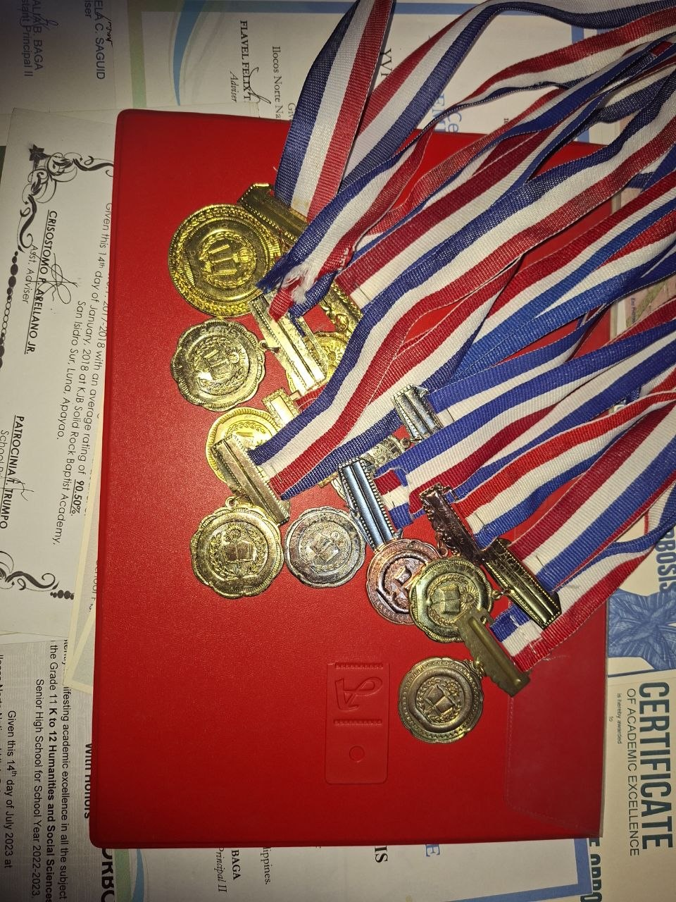
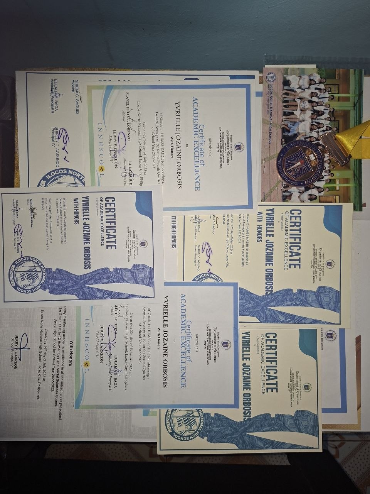

My Elementary School

Mission: The KJB Solid Rock Baptist Academy aims to train student with a Bible-based,Christ centered Academically-challenging education to love,fear and serve God through competent educators and administrators.
Vision: The KJB Solid Rock Baptist Academy is a Christian learning institution that nurtures and develops Bible-oriented and Academically-excellent students.
Achievements


School Hymn
Verse 1
On the Rock we stand so firm and true,
Guided, Lord, by Your holy view,
In this school we learn Your way,
Serving You each passing day.
Chorus
KJB Solid Rock, we proclaim,
Lifting high our Savior’s name,
With truth and faith we will obey,
Walking in the narrow way.
Verse 2
With the Bible as our guiding light,
We will choose the good and right,
Growing strong in faith and grace,
Running well in life’s own race.
Chorus
KJB Solid Rock, we proclaim,
Lifting high our Savior’s name,
With truth and faith we will obey,
Walking in the narrow way.
Bridge
Built on Christ, our Cornerstone,
In His love we are not alone,
We will serve both far and near,
Sharing hope and conquering fear.
(Repeat Chorus)